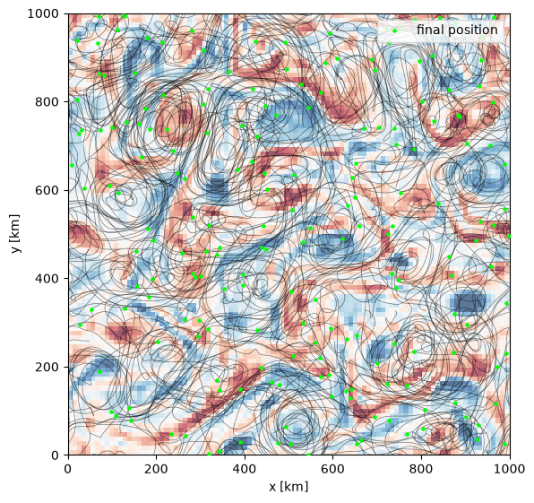

Lagrangian Particles (Drifters)
This example seeds a cloud of passive Lagrangian particles (“drifters”)
into a turbulent flow and advects them with the model velocity, using
GriddedParticleStepper. Because the
particle advection is written in pure JAX, the fluid model and the
particles can be stepped together inside a single
jax.lax.scan(), and the whole thing runs on a GPU.
import functools
import math
import matplotlib.pyplot as plt
import jax
jax.config.update("jax_enable_x64", True)
import jax.numpy as jnp
import numpy as np
import pyqg_jax
from pyqg_jax.particles import GriddedParticleStepper
Construct the Fluid Model and the Particle Stepper
We reuse the three-layer baroclinic turbulence setup from the layered model example for the flow, and pair it with a particle stepper on the same domain.
DT = 7200.0 # 2 hour time step
L = 1000e3
NX = 96
fluid = pyqg_jax.steppers.SteppedModel(
pyqg_jax.layered_model.LayeredModel(
nx=NX,
nz=3,
L=L,
f=1e-4,
beta=1.5e-11,
rek=5.787e-7,
U=jnp.array([0.05, 0.025, 0.0]),
H=jnp.array([500.0, 1000.0, 2500.0]),
rho=jnp.array([1025.0, 1025.5, 1026.5]),
precision=pyqg_jax.state.Precision.DOUBLE,
),
pyqg_jax.steppers.AB3Stepper(dt=DT),
)
particles = GriddedParticleStepper(L=L)
Spin Up the Flow
We first integrate the fluid alone until it reaches a turbulent, eddying state before releasing the drifters.
@functools.partial(jax.jit, static_argnames=["num_steps"])
def spin_up(state, num_steps):
final, _ = jax.lax.scan(
lambda c, _: (fluid.step_model(c), None), state, None, length=num_steps
)
return final
fluid_state = fluid.create_initial_state(jax.random.key(0))
fluid_state = spin_up(fluid_state, math.ceil(2.5 * 365 * 86400 / DT))
Seed the Particles
We release the drifters on a regular grid covering the domain. The positions are ordinary arrays, so any layout works.
seed = np.linspace(0.05 * L, 0.95 * L, 14)
px, py = np.meshgrid(seed, seed)
particle_state = particles.initialize_state(
jnp.asarray(px.ravel()), jnp.asarray(py.ravel())
)
Co-Step the Fluid and the Particles
At each step we read the upper-layer velocity before and after the fluid update (the particle stepper uses a two-time-level Runge-Kutta scheme), advance the particles, and record their positions. The fluid state and the particle state are carried together through a single scan.
def surface_velocity(state):
full = fluid.get_full_state(state)
return full.u[0], full.v[0]
@functools.partial(jax.jit, static_argnames=["num_steps"])
def co_step(fluid_state, particle_state, num_steps):
def loop_fn(carry, _x):
fluid_state, particle_state = carry
u0, v0 = surface_velocity(fluid_state)
next_fluid = fluid.step_model(fluid_state)
u1, v1 = surface_velocity(next_fluid)
next_particles = particles.step(particle_state, u0, v0, u1, v1, DT)
return (next_fluid, next_particles), (next_particles.x, next_particles.y)
(fluid_state, particle_state), (xs, ys) = jax.lax.scan(
loop_fn, (fluid_state, particle_state), None, length=num_steps
)
return fluid_state, xs, ys
n_days = 120
fluid_state, traj_x, traj_y = co_step(
fluid_state, particle_state, math.ceil(n_days * 86400 / DT)
)
Plot the Trajectories
We draw each drifter’s path over the final upper-layer relative vorticity. The drifters loop around coherent vortices and are stirred out along the filaments between them.
model = fluid.model
vort = np.asarray(
jnp.fft.irfftn(
-model.wv2 * fluid.get_full_state(fluid_state).ph[0],
s=(NX, NX),
axes=(-2, -1),
)
)
km = 1e-3
Lk = L * km
xs = np.asarray(traj_x) * km
ys = np.asarray(traj_y) * km
fig, ax = plt.subplots(figsize=(6, 5.5), layout="constrained")
amp = float(np.percentile(np.abs(vort), 99))
ax.imshow(
vort,
cmap="RdBu_r",
origin="lower",
extent=(0, Lk, 0, Lk),
vmin=-amp,
vmax=amp,
alpha=0.65,
)
for p in range(xs.shape[1]):
x = xs[:, p].copy()
y = ys[:, p].copy()
# break the line where a trajectory wraps across a periodic boundary
breaks = np.where((np.abs(np.diff(x)) > Lk / 2) | (np.abs(np.diff(y)) > Lk / 2))[0]
x[breaks] = np.nan
y[breaks] = np.nan
ax.plot(x, y, lw=0.5, color="k", alpha=0.5)
ax.scatter(xs[-1], ys[-1], s=5, color="lime", zorder=3, label="final position")
ax.set_xlim(0, Lk)
ax.set_ylim(0, Lk)
ax.set_xlabel("x [km]")
ax.set_ylabel("y [km]")
ax.legend(loc="upper right")
<matplotlib.legend.Legend at 0x7fe33c1412d0>

The same pattern—carrying the particle state alongside the model state
through jax.lax.scan—works for any of the models, and the particle
advection is differentiable, so trajectories can be used directly in
gradient-based objectives.